Awesome-Federated-CDR
If you like our project, please give us a star ⭐ on GitHub for the latest update.

This is a collection of papers on leveraging Federated Learning in Cross-Domain Recommendation. It's based on our survey paper: A Systematic Survey on Federated Cross-Domain Recommendation: Progress and Future Directions.
We will try to make this list updated frequently. If you found any error or any missed paper, please don't hesitate to open issues or pull requests.
Our survey has been submitted by IJCAI 2026 survey track.
What is Federated Cross-Domain Recommendation?
As shown in Figure 1, FCDR integrates information from multiple domains (e.g., music, movies, books) to train a model without compromising user privacy, thereby better serving users for each domain. For example, after watching a romantic movie, users may be inclined to read novels of a similar genre, or after listening to a particular style of music, they may develop an interest in related movies or books. Each domain involves multiple types of data, which can be categorized into three parts: user-side (e.g., user profiles, social relations), item-side (e.g., item attributes, product images), and user-item interactions (e.g., implicit feedback, reviews). User-side and user-item data usually contains privacy, whereas item-side data is often public. FCDR presents the following challenges: efficiently enabling communication and learning across domains, effectively leveraging various types of data, and securely transmitting or aggregating data from multiple domains.

Figure 1. Federated recommendation across three domains.
Summarizations based on Proposed Taxonomy

Table 1. A summary of models that leverage LLMs to assist graph-related tasks in literature, ordered by their release time. Fine-tuning denotes whether it is necessary to fine-tune the parameters of LLMs, and ♥ indicates that models employ parameter-efficient fine-tuning (PEFT) strategies, such as LoRA and prefix tuning. Prompting indicates the use of text-formatted prompts in LLMs, done manually or automatically. Acronyms in Task: Node refers to node-level tasks; Link refers to link-level tasks; Graph refers to graph-level tasks; Reasoning refers to Graph Reasoning; Retrieval refers to Graph-Text Retrieval; Captioning refers to Graph Captioning.
Table of Contents
Implicit Feedback for FCDR
(2019) [WWW' 2019] Cross-domain Recommendation Without Sharing User-relevant Data [Paper]
NATR
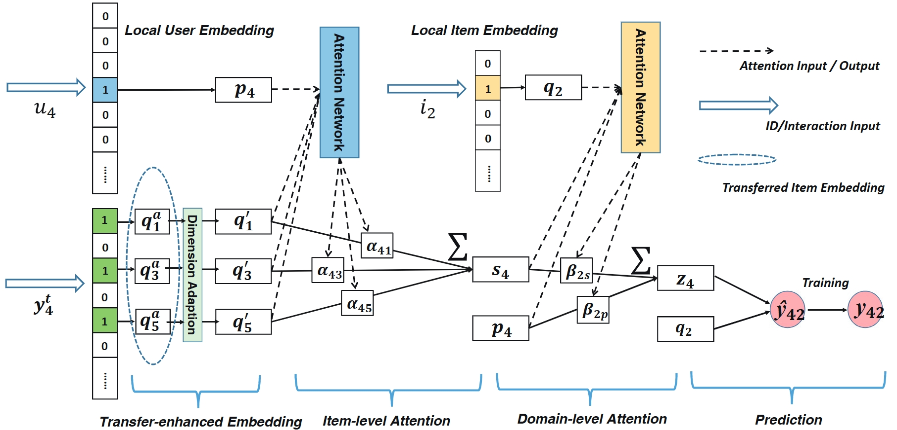
The framework of NATR.
(2021) [RecSys' 2021] Horizontal Cross-Silo Federated Recommender Systems [Paper]
Framework
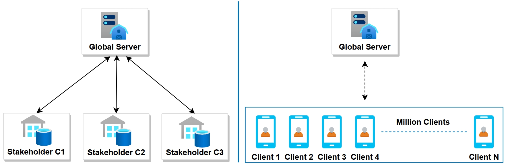
The framework of Kalloori et al.
(2021) [TKDD' 2021] Cross-domain Recommendation with Bridge-Item Embeddings [Paper]
NATR (same figure)
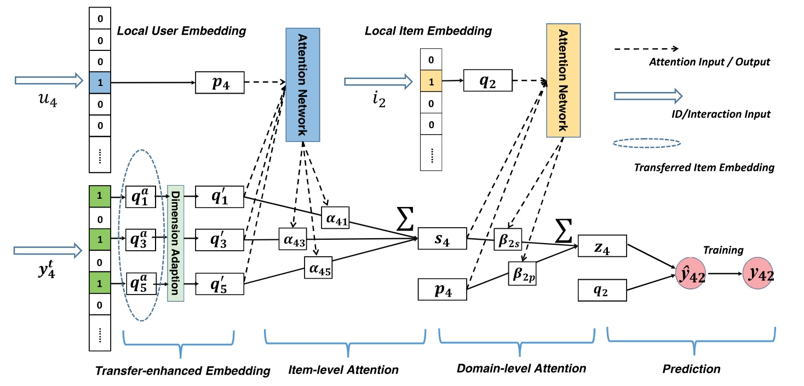
The framework of NATR.
(2022) [WWW' 2022] Differential Private Knowledge Transfer for Privacy-Preserving Cross-Domain Recommendation [Paper | Code]
PriCDR
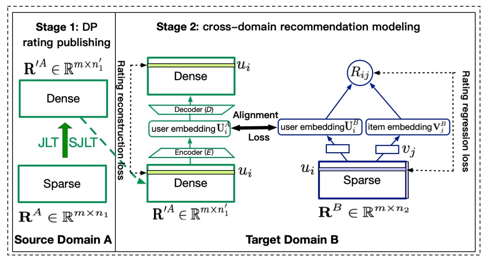
The framework of PriCDR.
(2023) [AAAI' 2023] Win-Win: A Privacy-Preserving Federated Framework for Dual-Target Cross-Domain Recommendation [Paper]
P2FCDR
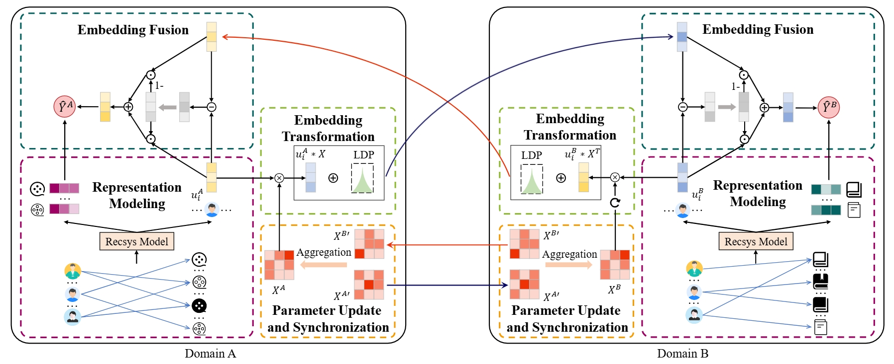
The framework of P2FCDR.
(2023) [IJCAI' 2023] Federated Probabilistic Preference Distribution Modelling with Compactness Co-Clustering for Privacy-Preserving Multi-Domain Recommendation [Paper]
FPPDM
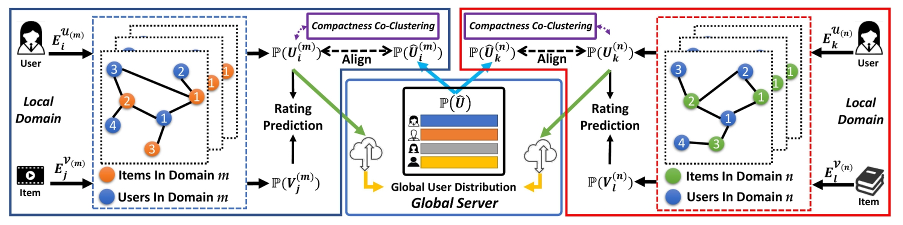
The framework of FPPDM.
(2023) [UAI' 2023] Personalized Federated Domain Adaptation for Item-to-Item Recommendation [Paper | Code]
PFGNN+
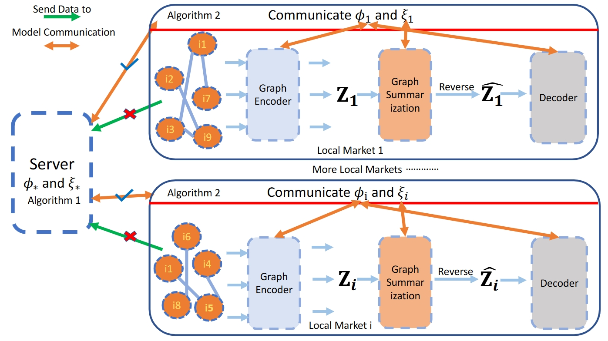
The framework of PFGNN+.
(2023) [GPC' 2023] FEDRKG: A Privacy-preserving Federated Recommendation Framework via Knowledge Graph Enhancement [Paper]
FEDRKG
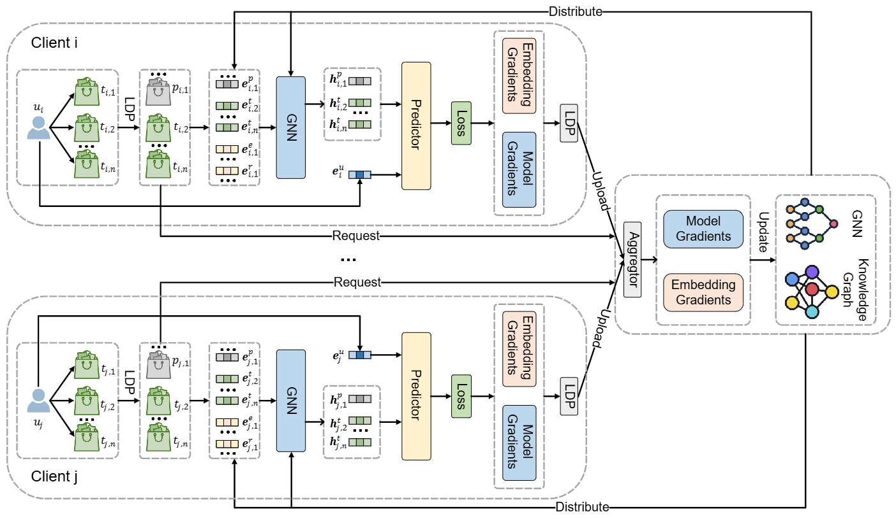
The framework of FEDRKG.
(2023) [AAAI' 2023] PPGenCDR: A Stable and Robust Framework for Privacy-Preserving Cross-Domain Recommendation [Paper | Code]
PPGenCDR
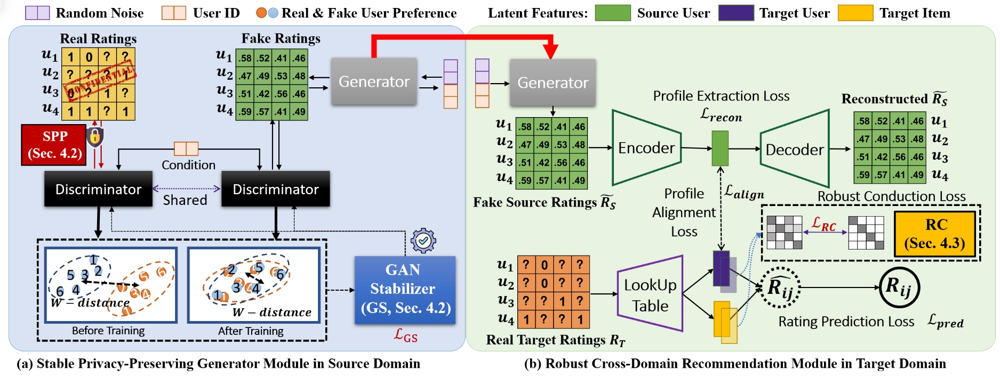
The framework of PPGenCDR.
(2023) [MM' 2023] Differentially Private Sparse Mapping for Privacy-Preserving Cross Domain Recommendation [Paper]
DPSMRec
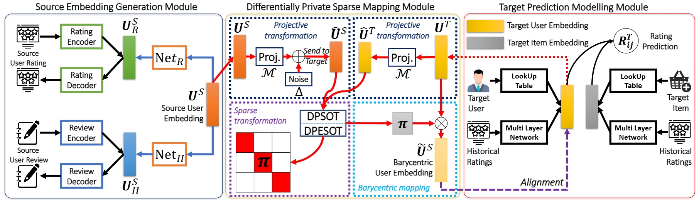
The framework of DPSMRec.
(2024) [KBS' 2024] A Privacy-Preserving Framework with Multi-Modal Data for Cross-Domain Recommendation [Paper]
P2M2-CDR

The framework of P2M2-CDR.
(2024) [TOIS' 2024] Privacy-preserving Cross-domain Recommendation with Federated Graph Learning [Paper]
PPCDR

The framework of PPCDR.
(2024) [TMM' 2024] Privacy-preserving Multi-source Cross-domain Recommendation Based on Knowledge Graph [Paper]
Multi-source CDR

The framework of Multi-source CDR.
(2024) [ICML' 2024] Reducing Item Discrepancy via Differentially Private Robust Embedding Alignment for Privacy-Preserving Cross-Domain Recommendation [Paper]
RidCDR

The framework of RidCDR.
(2024) [ECML PKDD' 2024] FedHCDR: Federated Cross-Domain Recommendation with Hypergraph Signal Decoupling [Paper | Code]
FedHCDR
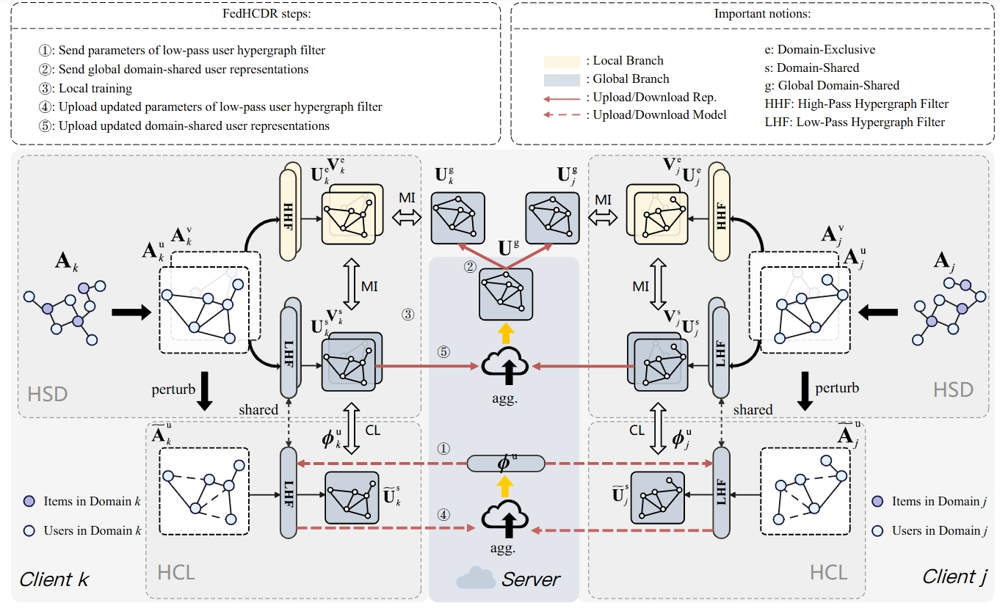
The framework of FedHCDR.
(2024) [WWW' 2024] Towards Efficient Communication and Secure Federated Recommendation System via Low-rank Training [Paper]
CoLR

The framework of CoLR.
(2024) [NeurIPS' 2024] Federated Graph Learning for Cross-Domain Recommendation [Paper]
FedGCDR
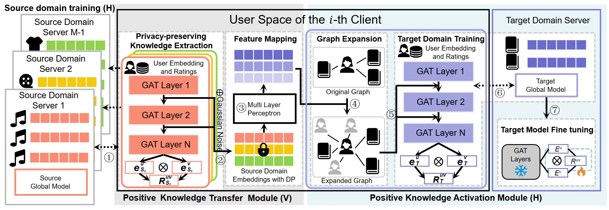
The framework of FedGCDR.
(2025.01) [TSC' 2025] Federated Contrastive Learning for Cross-Domain Recommendation [Paper]
Fed-CLR
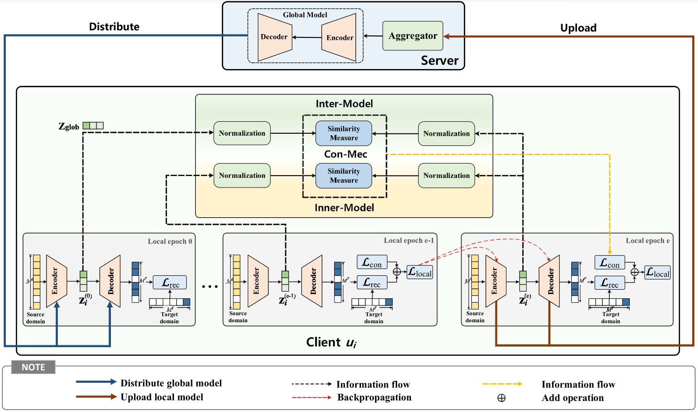
The framework of Fed-CLR.
(2025.03) [TMM' 2025] Federated User Preference Modeling for Privacy-Preserving Cross-Domain Recommendation [Paper | Code]
FUPM

The framework of FUPM.
(2025.04) [AAAI' 2025] Enhancing Healthcare Recommendations: A Privacy-Protective and Interpretable Cross-Domain Framework [Paper | Code]
HCR
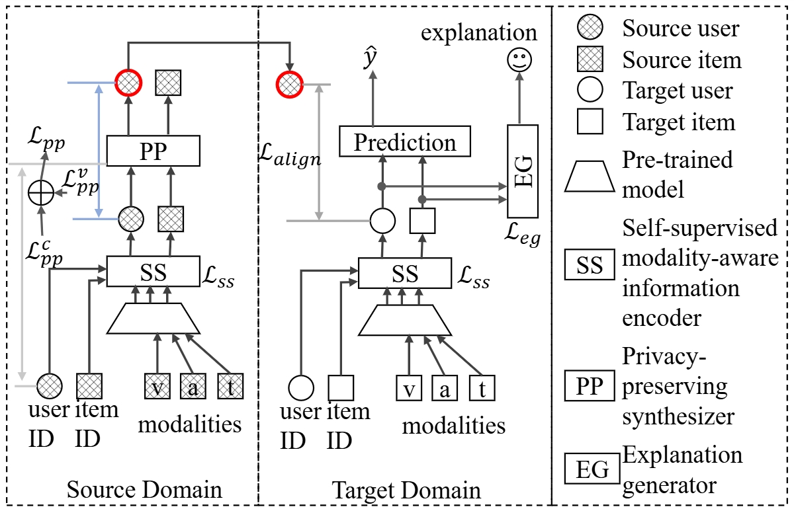
The framework of HCR.
(2025.04) [TKDE' 2025] Camouflaged Variational Graph AutoEncoder Against Attribute Inference Attacks for Cross-Domain Recommendation [Paper | Code]
CVGAE

The framework of CVGAE.
(2025.05) [arXiv' 2025] FedGRec: Dynamic Spatio-Temporal Federated Graph Learning for Secure and Efficient Cross-Border Recommendations [Paper]
FedGRec

The framework of FedGRec.
(2025.07) [TIST' 2025] A Federated Graph Neural Network with Differential Privacy for Cross-domain Recommender Systems [Paper]
FGD-CDR

The framework of FGD-CDR.
(2025.11) [KBS' 2025] Parsilo-CDR: Privacy-aware cross-domain recommendation for data silo [Paper]
Parsilo-CDR

The framework of Parsilo-CDR.
(2025.11) [CIKM' 2025] DT-FedSDC: A Dual-Target Federated Framework with Semantic Enhancement and Disentangled Contrastive Learning for Cross-Domain Recommendation [Paper]
DT-FedSDC
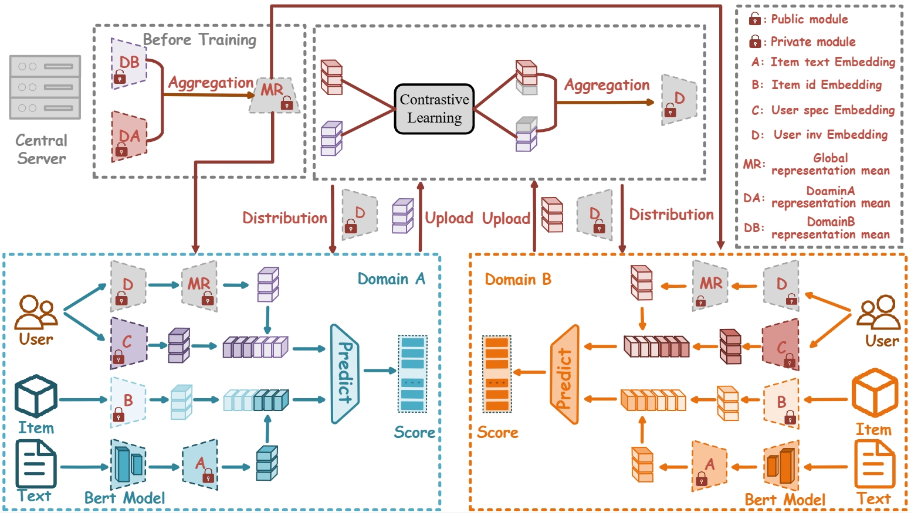
The framework of DT-FedSDC.
Explicit Feedback for FCDR
(2020) [TIST' 2020] Mediated Secure Multi-Party Protocols for Collaborative Filtering [Paper]
Abstract (No Framework)

The abstract of Shmueli et al.
(2020) [TKDD' 2020] Data Sharing via Differentially Private Coupled Matrix Factorization [Paper]
DP-CMF
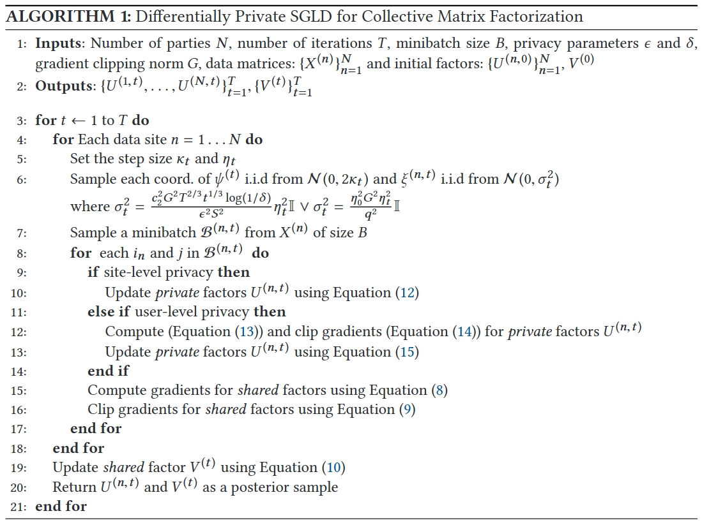
The algorithm of DP-CMF.
(2021) [IEEE Intelligent Systems' 2021] Secure Federated Matrix Factorization [Paper | Code]
FedMF

The algorithm of FedMF.
(2021) [EIECS' 2021] A vertical federation recommendation method based on clustering and latent factor model [Paper]
CLMF-VFL

The framework of CLMF-VFL.
(2021) [KBS' 2021] FCMF: Federated Collective Matrix Factorization for Heterogeneous Collaborative Filtering [Paper]
FCMF
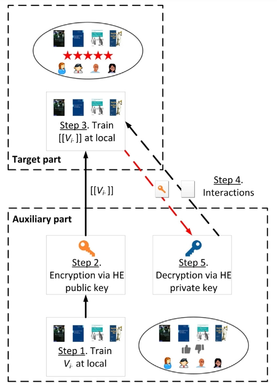
The framework of FCMF.
(2022) [DCN' 2022] FedCDR: Privacy-preserving federated cross-domain recommendation [Paper]
FedCDR

The framework of FedCDR.
(2022) [CIKM' 2022] FedCDR: Federated Cross-Domain Recommendation for Privacy-Preserving Rating Prediction [Paper]
FedCDR

The framework of FedCDR.
(2022) [CollaborateCom' 2022] MetaEM: Meta Embedding Mapping for Federated Cross-domain Recommendation to Cold-Start Users [Paper]
MetaEM

The framework of MetaEM.
(2023) [ICML' 2023] Vertical Federated Graph Neural Network for Recommender System [Paper | Code]
VerFedGNN
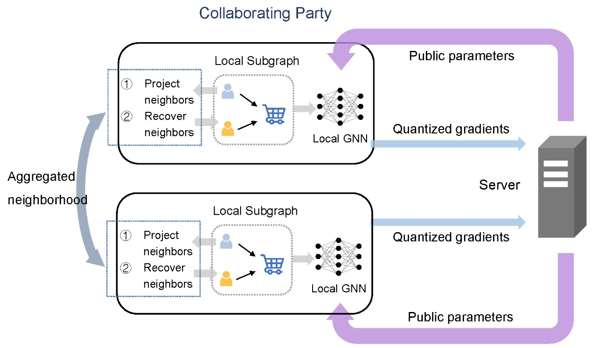
The framework of VerFedGNN.
(2023) [TII' 2023] Federated Learning-Based Cross-Enterprise Recommendation With Graph Neural Networks [Paper]
FL-GMT
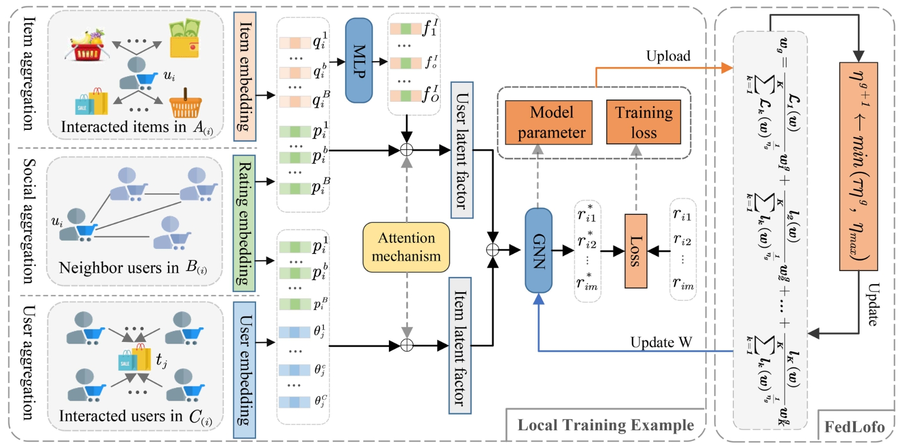
The framework of FL-GMT.
(2023) [IEEE Access' 2023] Privacy-Preserving Matrix Factorization for Cross-Domain Recommendation [Paper]
SWHE-MF
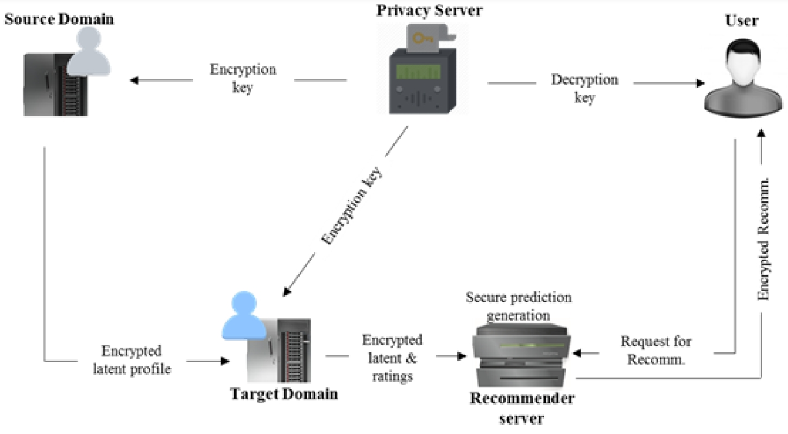
The framework of SWHE-MF.
(2023) [ECAI' 2023] Secure Social Recommendation based on Secret Sharing [Paper | Code]
SeSoRec

The algorithm of SeSoRec.
(2023) [CEE' 2023] A Privacy-Preserving Framework for Horizontal Cross-Silo Federated Recommender SystemsCross-Domain Recommender Systems [Paper]
Framework
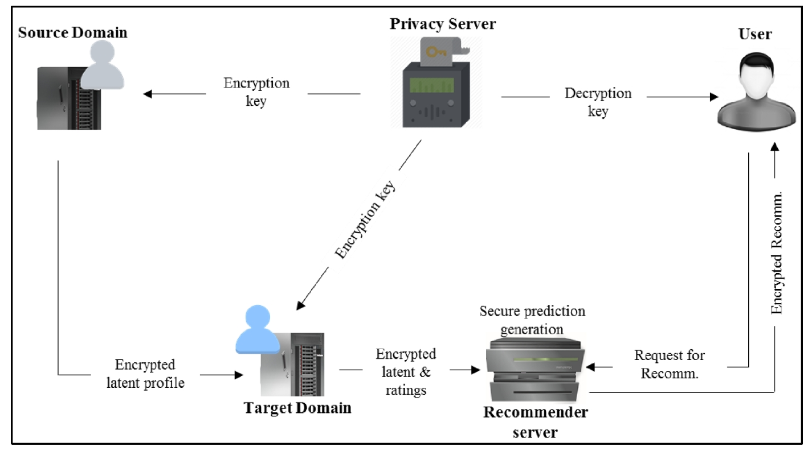
The algorithm of Ogunseyi et al.
(2024) [TKDE' 2024] FedCORE: Federated Learning for Cross-Organization Recommendation Ecosystem [Paper]
FedCORE

The framework of FedCORE.
(2024) [ICWS' 2024] GCPN: A Group Connected based Method for Continual Vertical Federated Recommender Systems in Data Ecosystems [Paper]
GCPN

The framework of GCPN.
(2024.12) [KAIS' 2025] Federated Cross-Domain Recommendation System Based on Bias Eliminator and Personalized Extractor [Paper]
FedBP
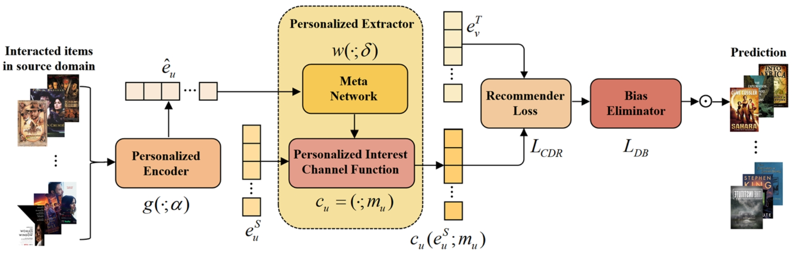
The framework of FedBP.
(2025.04) [WWW' 2025] Privacy-Friendly Cross-Domain Recommendation via Distilling User-irrelevant Information [Paper | Code]
PFCDR
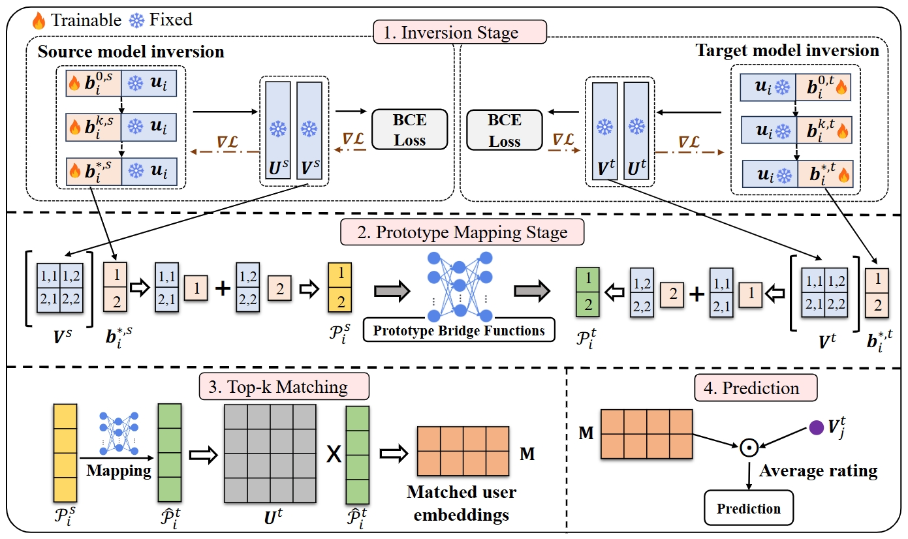
The framework of PFCDR.
(2025.04) [WWW' 2025] P4GCN: Vertical Federated Social Recommendation with Privacy-Preserving Two-Party Graph Convolution Network [Paper]
P4GCN
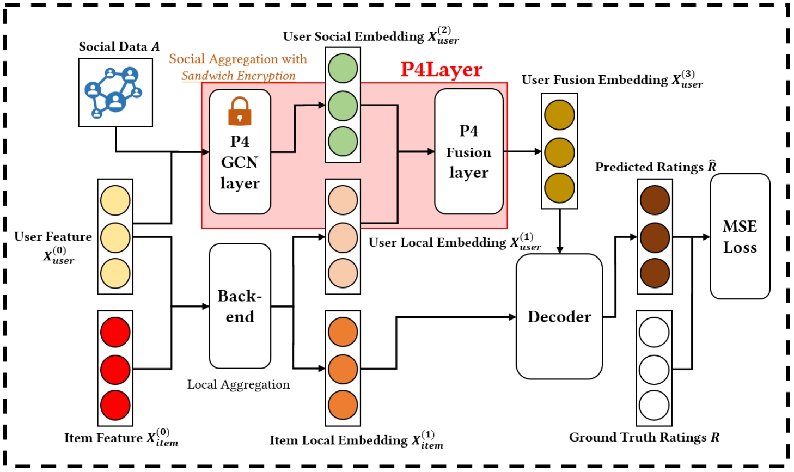
The framework of P4GCN.
Sequential Feedback for FCDR
(2020) [APWeb-WAIM' 2020] FedOCD: A One-Shot Federated Framework for Heterogeneous Cross-Domain Recommendation [Paper | Code]
FedOCD
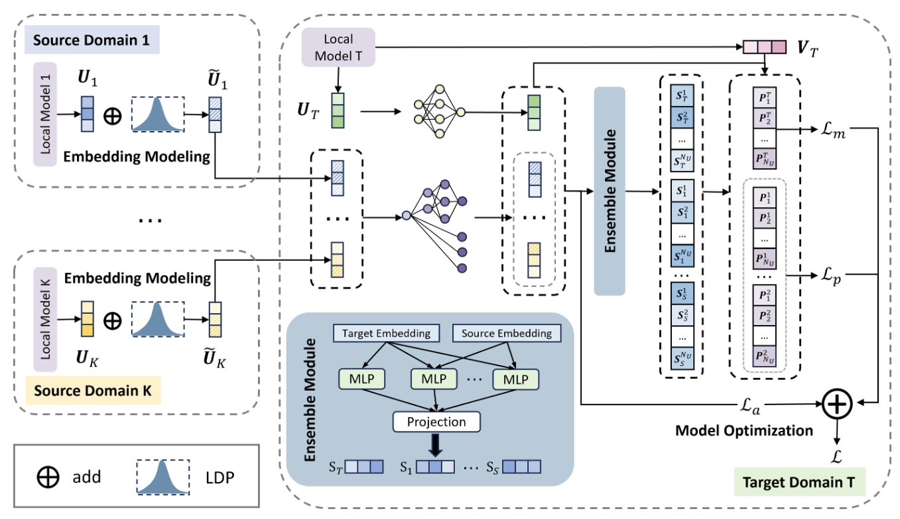
The framework of FedOCD.
(2024) [SDM' 2024] FedDCSR: Federated Cross-Domain Sequential Recommendation via Disentangled Representation Learning [Paper | Code]
FedDCSR
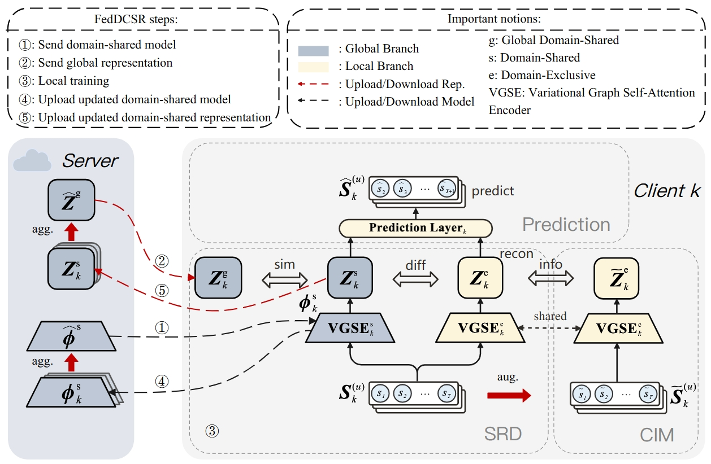
The framework of FedDCSR.
(2024) [ICDM' 2024] Privacy-Preserving Cross-Domain Sequential Recommendation [Paper | Code]
PriCDSR
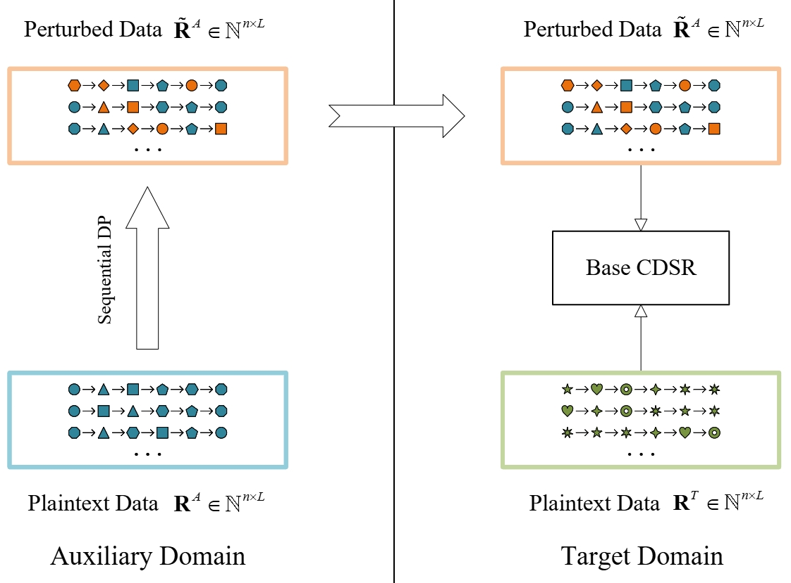
The framework of PriCDSR.
(2024) [CSCWD' 2024] A Privacy-Preserving Method for Sequential Recommendation in Vertical Federated Learning [Paper]
FedSeqRec

The framework of FedSeqRec.
(2024) [WWW' 2024] Prompt-enhanced Federated Content Representation Learning for Cross-domain Recommendation [Paper | Code]
PFCR
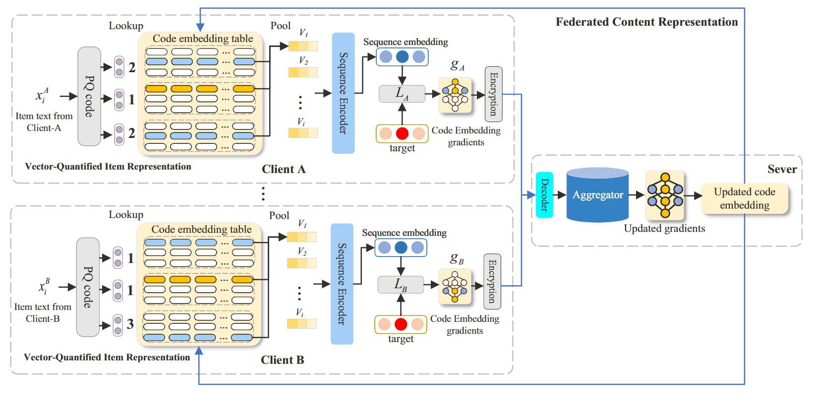
The framework of PFCR.
(2025.01) [COLING' 2025] FedCSR: A Federated Framework for Multi-Platform Cross-Domain Sequential Recommendation with Dual Contrastive Learning [Paper | Code]
FedCSR

The framework of FedCSR.
(2025.01) [TCE' 2025] Oh-FedRec: One-Shot and Heterogeneous Vertical Federated Recommendation System [Paper]
Oh-FedRec

The framework of Oh-FedRec.
(2025.03) [arXiv' 2025] Federated Mixture-of-Expert for Non-Overlapped Cross-Domain Sequential Recommendation [Paper]
FMoE-CDSR
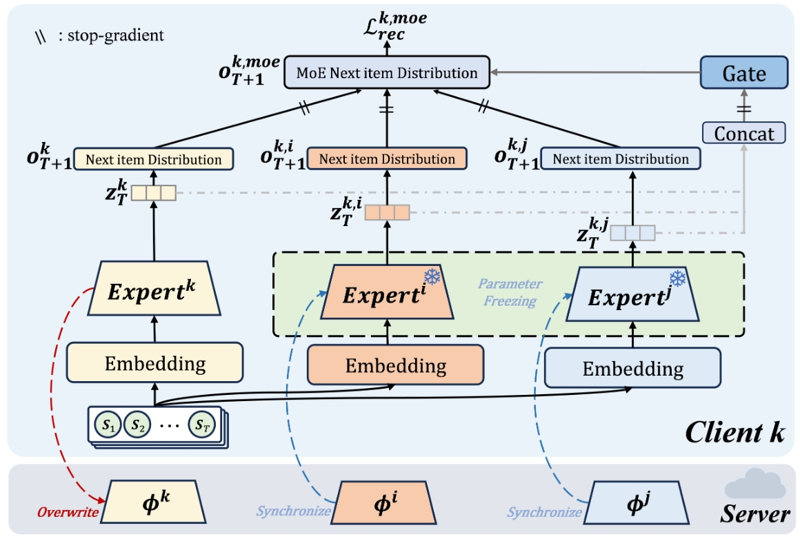
The framework of FMoE-CDSR.
(2025.07) [TOIS' 2025] Federated Semantic Learning for Privacy-preserving Cross-domain Recommendation [Paper | Code]
FFMSR
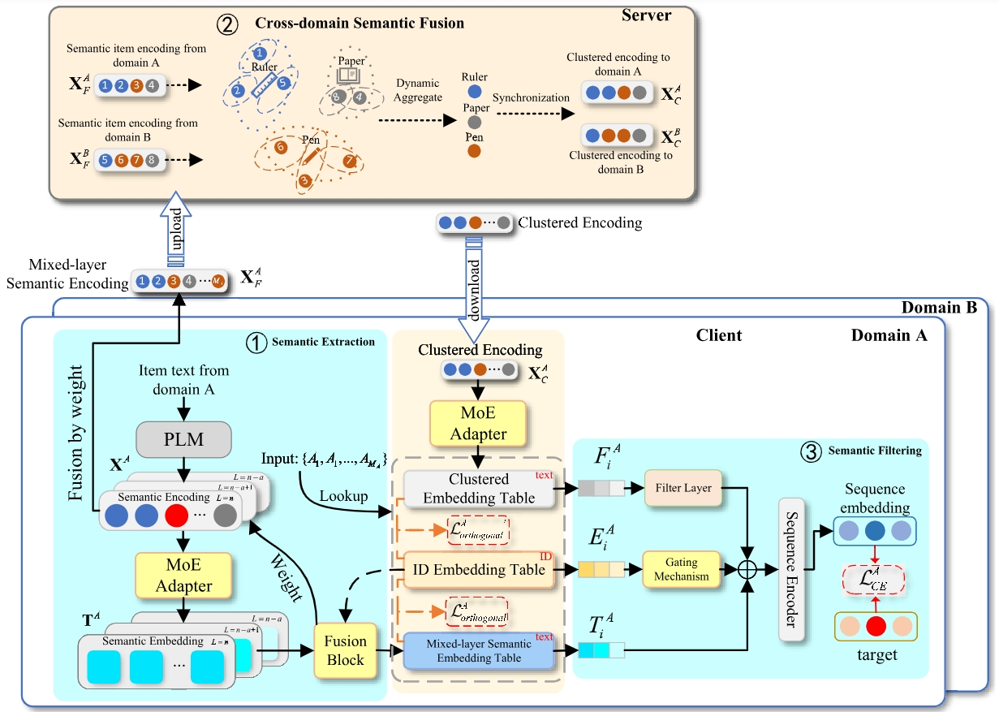
The framework of FFMSR.
Others
Social Relations for FCDR
(2021) [TKDE' 2021] A Privacy-Preserving Distributed Contextual Federated Online Learning Framework with Big Data Support in Social Recommender Systems [Paper]
T-PriDO
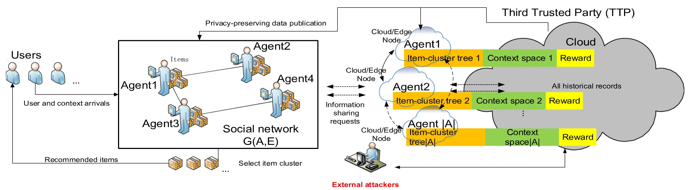
The framework of T-PriDO.
(2021) [NeurIPS' 2021] Exploiting Data Sparsity in Secure Cross-Platform Social Recommendation [Paper]
S3Rec
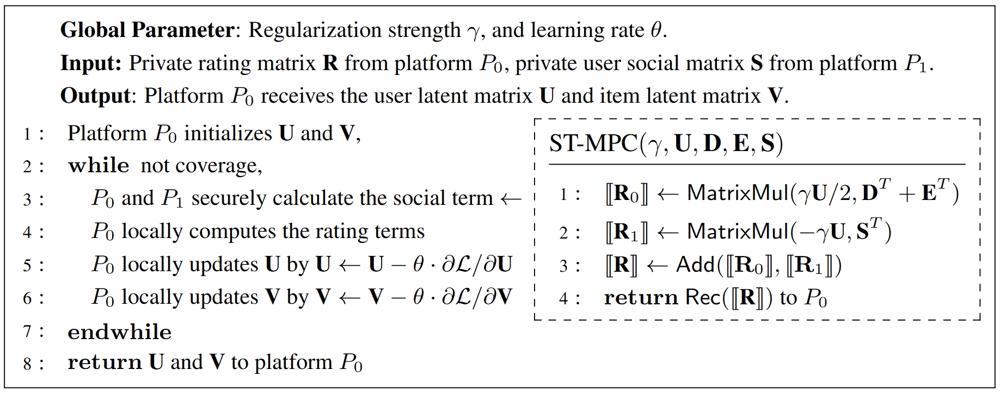
The algorithm of S3Rec.
(2022) [FL@IJCAI' 2022] Privacy-Preserving Federated Cross-Domain Social Recommendation [Paper]
FCSR
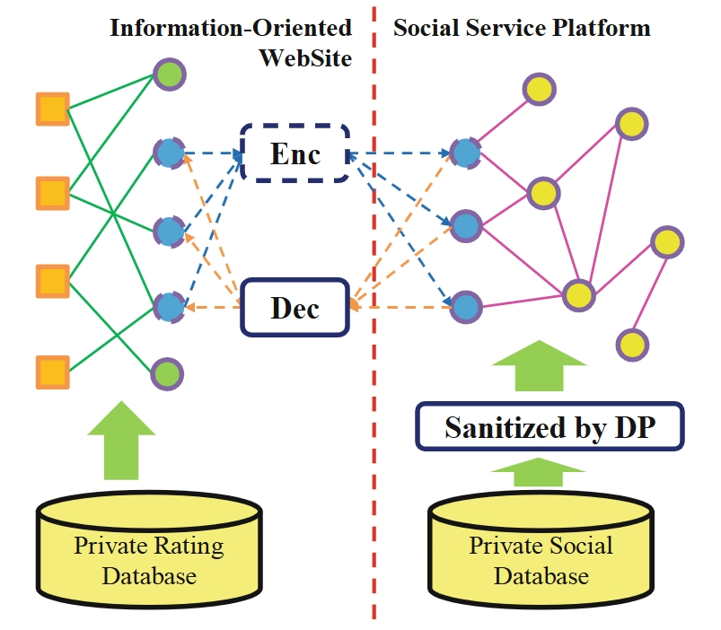
The framework of FCSR.
(2022) [TDSC' 2022] Efficiency Boosting of Secure Cross-platform Recommender Systems over Sparse Data [Paper]
S3Rec_sen
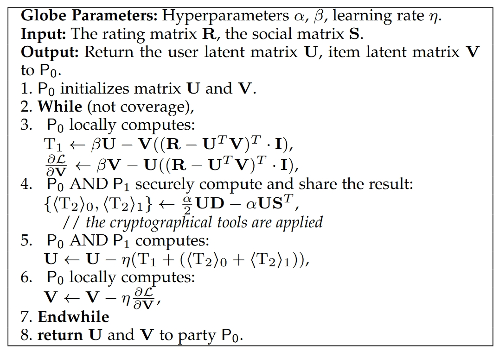
The algorithm of S3Rec_sen.
(2023) [ECAI' 2023] Secure Social Recommendation based on Secret Sharing [Paper | Code]
SeSoRec
The algorithm of SeSoRec.
(2025.04) [WWW' 2025] P4GCN: Vertical Federated Social Recommendation with Privacy-Preserving Two-Party Graph Convolution Network [Paper]
P4GCN
The framework of P4GCN.
Item Information for FCDR
(2023) [UAI' 2023] Personalized Federated Domain Adaptation for Item-to-Item Recommendation [Paper]
PFGNN+
The framework of PFGNN+.
(2024) [WWW' 2024] Prompt-enhanced Federated Content Representation Learning for Cross-domain Recommendation [Paper | Code]
PFCR
The framework of PFCR.
(2025.07) [TOIS' 2025] Federated Semantic Learning for Privacy-preserving Cross-domain Recommendation [Paper | Code]
FFMSR
The framework of FFMSR.
(2025.11) [CIKM' 2025] DT-FedSDC: A Dual-Target Federated Framework with Semantic Enhancement and Disentangled Contrastive Learning for Cross-Domain Recommendation [Paper]
DT-FedSDC
The framework of DT-FedSDC.
Review Text for FCDR
(2023) [MM' 2023] Differentially Private Sparse Mapping for Privacy-Preserving Cross Domain Recommendation [Paper]
DPSMRec
The framework of DPSMRec.
(2025.03) [TMM' 2025] Federated User Preference Modeling for Privacy-Preserving Cross-Domain Recommendation [Paper | Code]
FUPM
The framework of FUPM.
Knowledge Graph for FCDR
(2023) [Information Sciences' 2023] MuKGB-CRS: Guarantee Privacy and Authenticity of Cross-Domain Recommendation via Multi-Feature Knowledge Graph Integrated Blockchain [Paper]
MuKG

The framework of MuKG.
(2023) [GPC' 2023] FEDRKG: A Privacy-preserving Federated Recommendation Framework via Knowledge Graph Enhancement [Paper]
FEDRKG
The framework of FEDRKG.
(2024) [TMM' 2024] Privacy-preserving Multi-source Cross-domain Recommendation Based on Knowledge Graph [Paper]
Multi-source CDR
The framework of Multi-source CDR.
Multimodal Information for FCDR
(2024) [KBS' 2024] A Privacy-Preserving Framework with Multi-Modal Data for Cross-Domain Recommendation [Paper]
P2M2-CDR
The framework of P2M2-CDR.
(2025.04) [AAAI' 2025] Enhancing Healthcare Recommendations: A Privacy-Protective and Interpretable Cross-Domain Framework [Paper | Code]
HCR
The framework of HCR.
Contributing
If you have come across relevant resources, feel free to open an issue or submit a pull request.
xxxxxxxxxx* (_time_) [conference] **paper_name** [[Paper](link) | [Code](link)]<details close><summary>Model name</summary><p align="center"><img width="75%" src="Figures/xxx.jpg" /></p><p align="center"><em>The framework of model name.</em></p></details>
Cite Us
Feel free to cite this work if you find it useful to you! ❤️
Awaiting publication